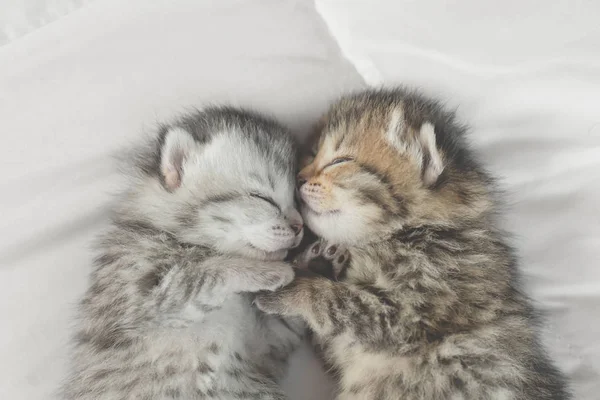
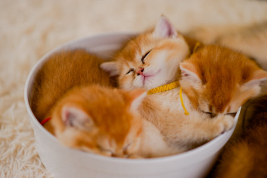
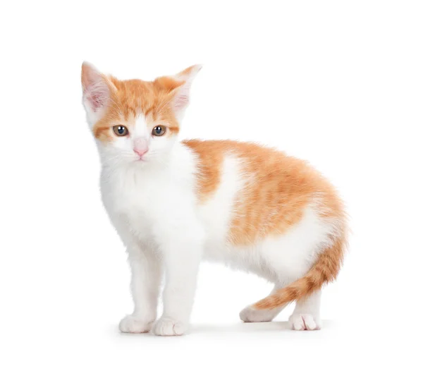

Este es un titulo muy chiquito,
hay títulos del 1 a 6
Esto es un parrafo con una lista no ordenada
Abisinio
Americano de pelo duro
American wirehair
Asiático
Balinés
Birmano
Bobtail japonés de pelo corto
Bobtail japonés de pelo largo
Gato bosque de Noruega
Bosque de Noruega
Bosque de Siberia
Británico de pelo corto
Burmilla
Chinchilla
Azul ruso
Gato azul ruso
Gato bengalí
Bombay
Burmés
Gato egipcio o Sphynx
Khao Manee
Korat
Esto una lista odenada
Abisinio
Americano de pelo duro
American wirehair
Asiático
Balinés
Birmano
Bobtail japonés de pelo corto
Bobtail japonés de pelo largo
Gato bosque de Noruega
Bosque de Noruega
Bosque de Siberia
Británico de pelo corto
Burmilla
Chinchilla
Azul ruso
Gato azul ruso
Gato bengalí
Bombay
Burmés
Gato egipcio o Sphynx
Khao Manee
Korat
Esto es un p con una lista que inicia en un numero diferente y hay que incluir la palabra start
Abisinio
Americano de pelo duro
American wirehair
Asiático
Balinés
Birmano
Bobtail japonés de pelo corto
Bobtail japonés de pelo largo
Gato bosque de Noruega
Bosque de Noruega
Bosque de Siberia
Británico de pelo corto
Burmilla
Chinchilla
Azul ruso
Gato azul ruso
Gato bengalí
Bombay
Burmés
Gato egipcio o Sphynx
Khao Manee
Korat
Imagen local
orange baby one
Imagen de internet
orange baby two
Limón y Sal
Tengo que confesar que a veces
no me gusta tu forma de ser,
luego te me desapareces
y no entiendo muy bien por qué.
No dices nada romántico
cuando llega el atardecer,
te pones de un humor extraño
con cada luna llena al mes.
Pero todo lo demás le gana lo bueno que me das,
solo tenerte cerca siento que vuelvo a empezar.
Yo te quiero con limón y sal,
yo te quiero tal y como estás,
no hace falta cambiarte nada.
Yo te quiero si vienes o si vas,
si subes y bajas y no estás
seguro de lo que sientes.
Tengo que confesarte ahora
nunca creí en la felicidad,
a veces algo se le parece
pero es pura casualidad.
Luego me vengo a encontrar
con tus ojos me dan algo más,
solo tenerte cerca
siento que vuelvo a empezar.
Yo te quiero con limón y sal,
yo te quiero tal y como estás,
no hace falta cambiarte nada.
Yo te quiero si vienes o si vas,
si subes y bajas y no estás
seguro de lo que sientes. (x2)
Solo tenerte cerca, siento que vuelvo a empezar.
Este es el link para una cafeteria, con etiqueta iframe
Este es un video de youtube, con etiqueta iframe



Nombre
Edad
Cuidad
Juan
25
México
Ana
30
Buenos Aires
Pedro
28
Lima
Este es un span>
¡me he movido con css!¡me he movido con css!¡me he movido con css!
LALALA
LALALA
LALALA
1
2
3
4
5
Color en Hexadecimal: #244625
Color con Palabra Clave: green
Color en RGB: (48, 126, 80)
Color en RGBA (con transparencia): (142, 230, 107, 0.452)
Color en HSL: (155, 22%, 51%)
Color en HSLA (con transparencia): (149, 30%, 42%, 0.377)